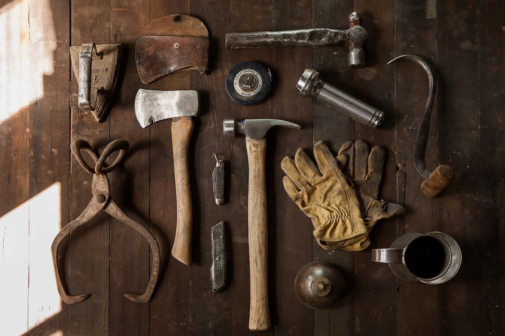
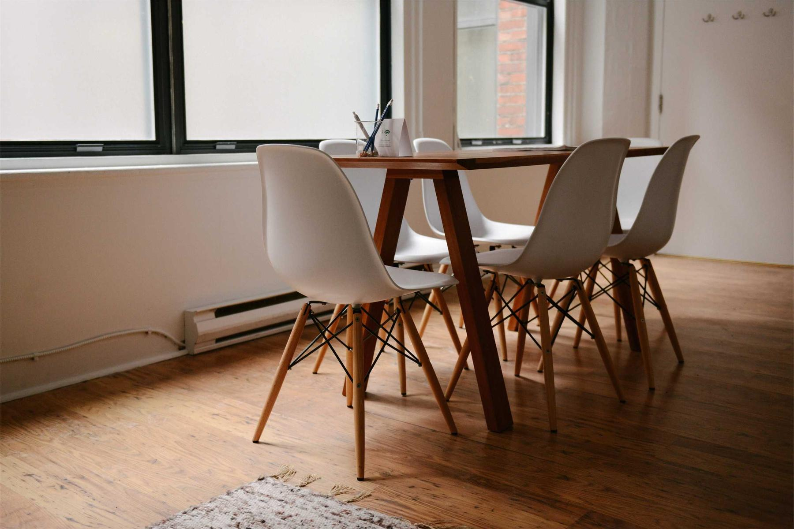

Kitchens, wardrobes and one-off furniture, made by hand in our workshop and fitted by the same two people who built them.

6–8 weeksfrom first sketch to the last hinge, for most kitchens.
Everything is drawn for your room, cut in our workshop and fitted by us. No flat-packs, no subcontractors.

Solid timber and two-pack, designed around how you actually cook.
Floor to ceiling, with the drawers where your hands expect them.
Dining tables, desks and shelving that will be handed down.
New doors, new benchtops, old cabinets made right again.
From the workshop
“We’d rather make one kitchen properly than three quickly. That’s why there’s a waiting list, and why nobody on it has complained.”Sam Hollis, head joiner